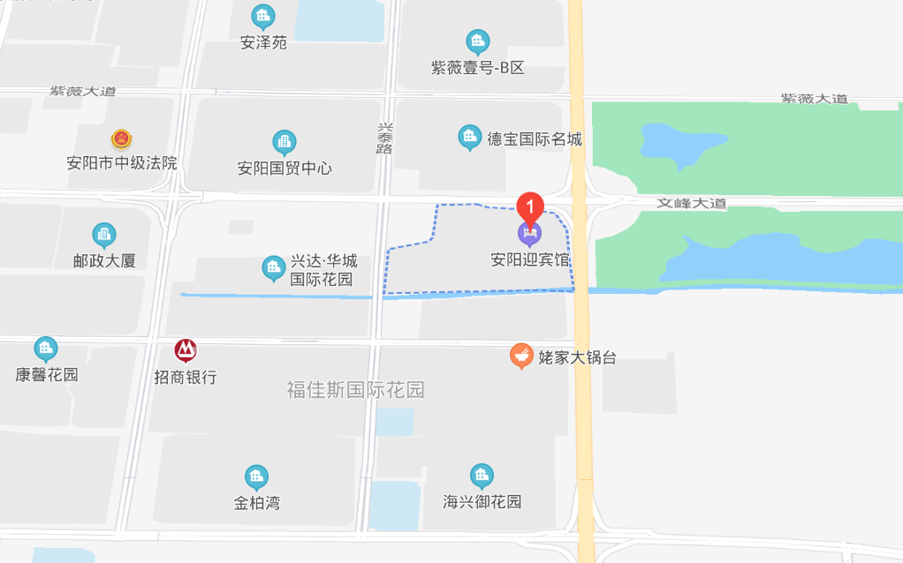

非常开心大家能来参加我们的婚礼，希望大家在安阳的这段时间能感到轻松、惬意。这里有一些婚礼的具体安排和行程建议。
我们的婚礼会在12月30日 11:30 左右开始，一般提前半个小时就可以入场了
河南，安阳，文峰大道东段609号，安阳迎宾馆 二层
安阳迎宾馆离安阳东站比较近，有5公里的车程，打车比较方便。距离京港澳高速安阳北出口也不远。
小吃：除了河南都有的烩面、胡辣汤之外，安阳还有些特色值得尝尝，扁粉菜、粉浆饭都是出了安阳就见不到的本地美食，感兴趣的话可以让我们安排
游玩：安阳有殷墟博物馆可以参观，文峰塔也适合(远远地)看一下
一般情况下微信就可以，找不到人的话可以直接打call：♂ I565295IIO7 ♀ I88IO2967I7